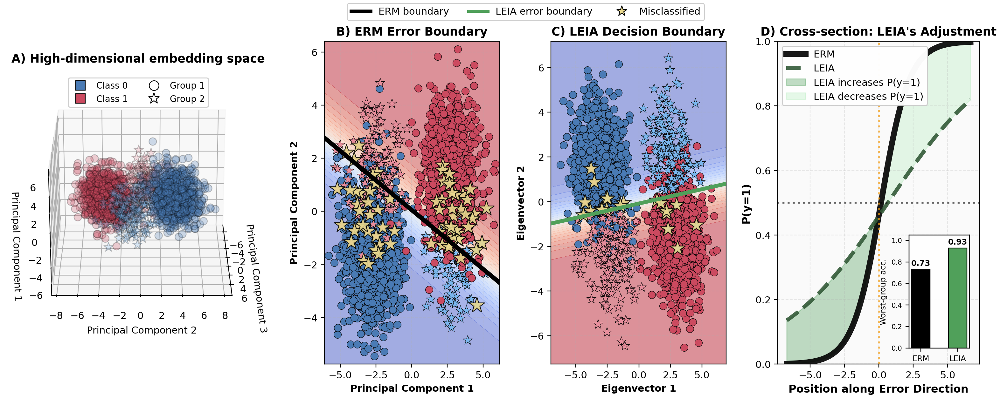

Robustness Beyond Known Groups with Low-rank Adaptation

Deep learning models trained to optimize average accuracy often exhibit systematic failures on particular subpopulations. In real world settings, the subpopulations most affected by such disparities are frequently unlabeled or unknown, thereby motivating the development of methods that are performant on sensitive subgroups without being pre-specified. However, existing group-robust methods typically assume prior knowledge of relevant subgroups, using group annotations for training or model selection. We propose Low-rank Error Informed Adaptation (LEIA), a simple two-stage method that improves group robustness by identifying a low-dimensional subspace in the representation space where model errors concentrate. LEIA restricts adaptation to this error-informed subspace via a low-rank adjustment to the classifier logits, directly targeting latent failure modes without modifying the backbone or requiring group labels. Using five real-world datasets, we analyze group robustness under three settings: (1) truly no knowledge of subgroup relevance, (2) partial knowledge of subgroup relevance, and (3) full knowledge of subgroup relevance. Across all settings, LEIA consistently improves worst-group performance while remaining fast, parameter-efficient, and robust to hyperparameter choice.